File: 000300.gt.txt (if the image is defective, simply delete all Arabic text and the line will be excluded)
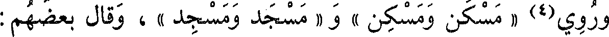
وروي(4) « مسكن ومسكن » و « مسجد ومسجد » ، وقال بعضهم :
File: 000301.gt.txt (if the image is defective, simply delete all Arabic text and the line will be excluded)
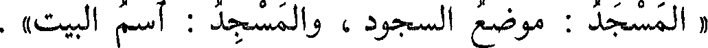
« المسجد : موضع السجود ، والمسجد : اسم البيت » .
File: 000302.gt.txt (if the image is defective, simply delete all Arabic text and the line will be excluded)
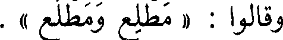
وقالوا : « مطلع ومطلع » .
File: 000303.gt.txt (if the image is defective, simply delete all Arabic text and the line will be excluded)
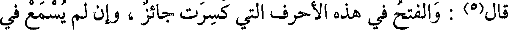
قال(5) : والفتح في هذه الأحرف التي كسرت جائز ، وإن لم يسمع في
File: 000304.gt.txt (if the image is defective, simply delete all Arabic text and the line will be excluded)
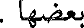
بعضهما .
File: 000305.gt.txt (if the image is defective, simply delete all Arabic text and the line will be excluded)
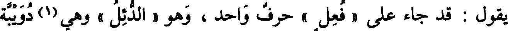
يقول : قد جاء على « فعل » حرف واحد ، وهو « الدئل » وهي(1) دويبة
File: 000306.gt.txt (if the image is defective, simply delete all Arabic text and the line will be excluded)
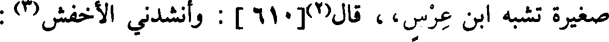
صغيرة تشبه ابن عرس،، قال(2)[610] : وأنشدني الأخفش(3) :
File: 000307.gt.txt (if the image is defective, simply delete all Arabic text and the line will be excluded)
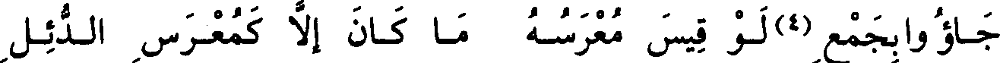
جاؤا بجمع (4) لو قيس معرسه ما كان إلا كمعرس الدئل
File: 000308.gt.txt (if the image is defective, simply delete all Arabic text and the line will be excluded)
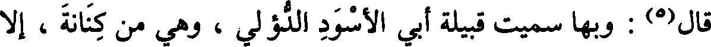
قال(5) : وبها سميت قبيلة أبي الأسود الدؤلي ، وهي من كنانة ، إلا
File: 000309.gt.txt (if the image is defective, simply delete all Arabic text and the line will be excluded)
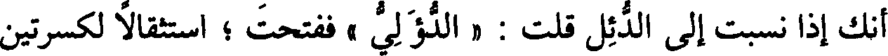
أنك إذا نسبت إلى الدئل قلت : « الدؤلي » ففتحت ؛ استثقالا لكسرتين
File: 000310.gt.txt (if the image is defective, simply delete all Arabic text and the line will be excluded)
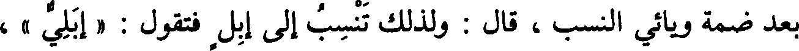
بعد ضمة ويائي النسب ، قال : ولذلك تنسب إلى إبل فتقول : « إبلي » ،
File: 000311.gt.txt (if the image is defective, simply delete all Arabic text and the line will be excluded)
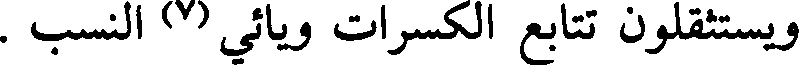
ويستثقلون تتابع الكسرات ويائي (7) النسب .
File: 000312.gt.txt (if the image is defective, simply delete all Arabic text and the line will be excluded)
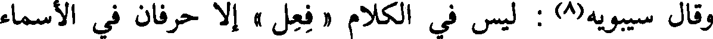
وقال سيبويه(8) : ليس في الكلام « فعل » إلا حرفان في الأسماء
File: 000313.gt.txt (if the image is defective, simply delete all Arabic text and the line will be excluded)
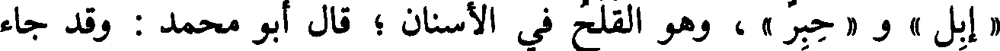
« إبل » و « حبر » وهو القلح في الأسنان ؛ قال أبو محمد : وقد جاء
File: 000314.gt.txt (if the image is defective, simply delete all Arabic text and the line will be excluded)
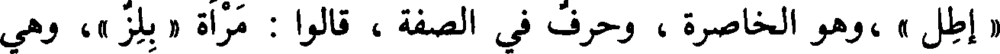
« إطل «» ،وهو الخاصرة ، وحرف في الصفة ، قالوا : امرأة « بلز »، وهي
File: 000315.gt.txt (if the image is defective, simply delete all Arabic text and the line will be excluded)
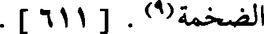
الضخمة(9) . [611] .
File: 000316.gt.txt (if the image is defective, simply delete all Arabic text and the line will be excluded)
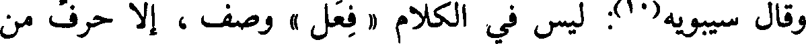
وقال سيبويه(10): ليس في الكلام « فعل » وصف ، إلا حرف من
File: 000317.gt.txt (if the image is defective, simply delete all Arabic text and the line will be excluded)
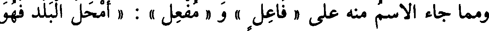
ومما جاء الاسم منه على « فاعل » و « مفعل » : « أمحل البلد فهو
File: 000318.gt.txt (if the image is defective, simply delete all Arabic text and the line will be excluded)
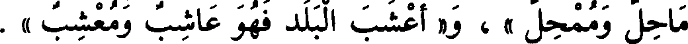
ماحل وممحل » ، و« أعشب البلد فهو عاشب ومعشب » .
File: 000319.gt.txt (if the image is defective, simply delete all Arabic text and the line will be excluded)
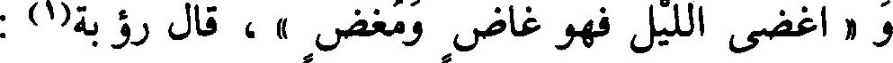
و « أغضى الليل فهو غاض ومغض » ، قال رؤبة(1) :
File: 000320.gt.txt (if the image is defective, simply delete all Arabic text and the line will be excluded)
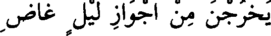
يخرجن من أجواز ليل غاض
File: 000321.gt.txt (if the image is defective, simply delete all Arabic text and the line will be excluded)
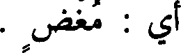
أي : مغض .
File: 000322.gt.txt (if the image is defective, simply delete all Arabic text and the line will be excluded)
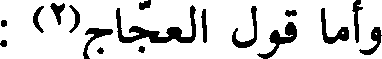
وأما قول العجاج(2) :
File: 000323.gt.txt (if the image is defective, simply delete all Arabic text and the line will be excluded)
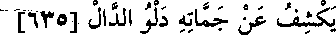
يكشف عن جماته دلو الدال [635]
File: 000324.gt.txt (if the image is defective, simply delete all Arabic text and the line will be excluded)
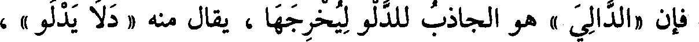
فإن «الدالي » هو الجاذب للدلو ليخرجها ، يقال منه « دلا يدلو » ،
File: 000325.gt.txt (if the image is defective, simply delete all Arabic text and the line will be excluded)
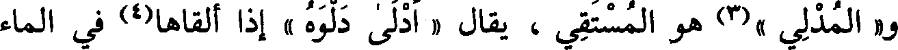
و« المدلي »(3) هو المستقي ، يقال « أدلى دلوه » إذا ألقاها(4) في الماء
File: 000326.gt.txt (if the image is defective, simply delete all Arabic text and the line will be excluded)
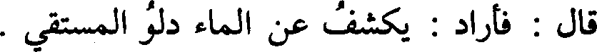
قال : فأراد : يكشف عن الماء دلو المستقي .
File: 000327.gt.txt (if the image is defective, simply delete all Arabic text and the line will be excluded)
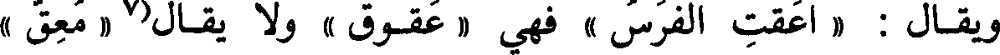
ويقال : « اعقت الفرس » فهي « عقوق » ولا يقال(7 « معق »
File: 000328.gt.txt (if the image is defective, simply delete all Arabic text and the line will be excluded)
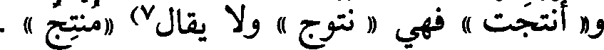
و« أنتجت » فهي « نتوج » ولا يقال7) « منتج » .
File: 000329.gt.txt (if the image is defective, simply delete all Arabic text and the line will be excluded)
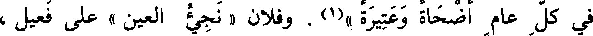
في كل عام أضحاة وعتيرة »(1) . وفلان « نجيء العين » على فعيل ،
To Save: `Ctrl+s`, make sure to choose `Webpage, complete`!